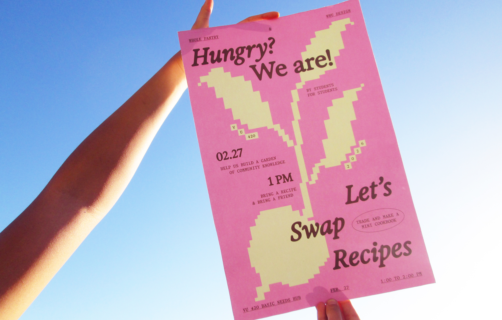
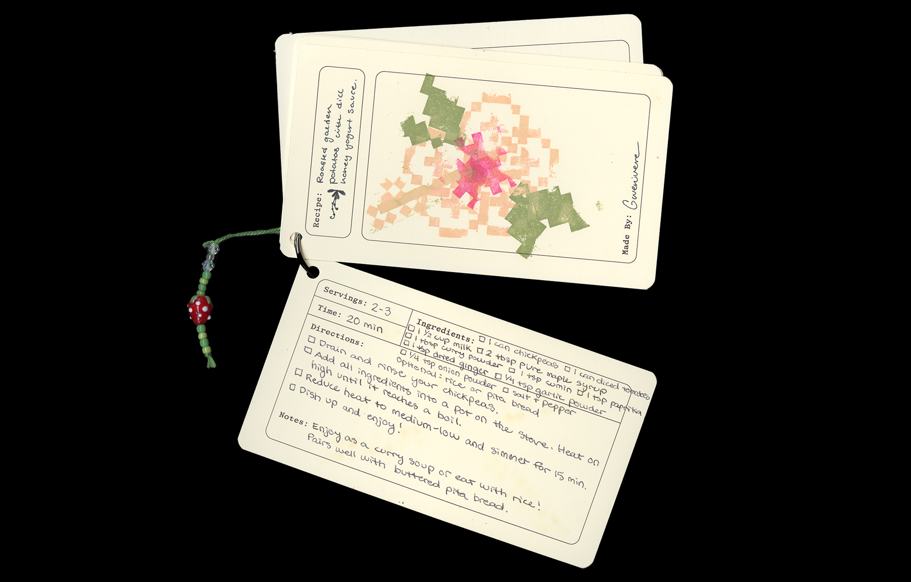
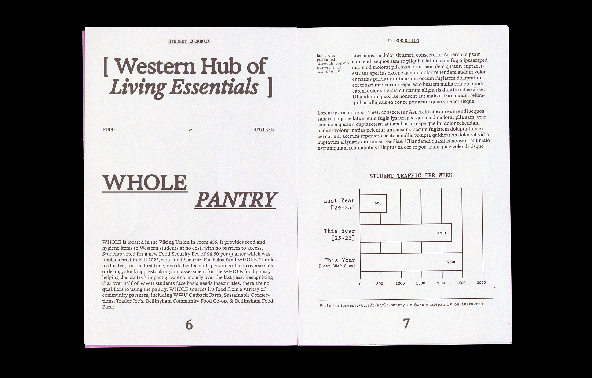
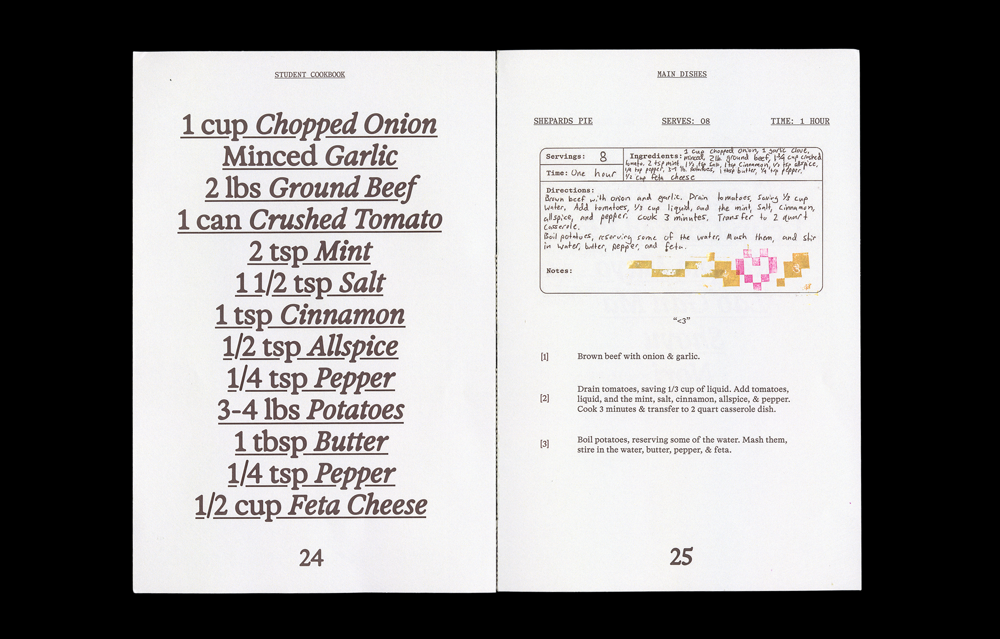

(designer)
RECIPE GARDEN
(workshop, publication)

- → Hosted in collaboration with the Basic Needs Hub & WHOLE Food Pantry at Western Washington University
- Conceptualized, hosted, and designed by Audrey di Girolamo, Kylie La Tour-Telles & Sofia Choi. Photography by Audrey di Girolamo.
RECIPE GARDEN began as an open-call across campus, with a series of posters inviting students to gather in the Basic Needs Hub to swap recipes. Conceptualized as a chance for community-building and creative connection, the workshop aimed to use recipe-swaps as an opportunity to open up a larger conversation about food insecurity amongst university students.
Workshop
Participants were asked to bring one or two recipes to write down on pre-designed recipe cards. These cards could then be decorated with flower-stamps, allowing them to create their own, original "flower". Using gardens, a place of growth, stewardship, and abundance, as a metaphor, participants were invited to "plant" a recipe and "harvest" a cookbook, swapping their recipe cards and collecting them onto a binder ring to create small booklets.




Publication
This publication compiles the recipes created by all workshop participants. Published by the Basic Needs Hub, it is availiable for pick-up within the WHOLE Food Pantry, alongside supplies for students to continue to write and create recipe cards. The book features the handwriting of each participant, capturing the unique qualities of each recipe card.


